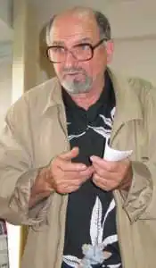
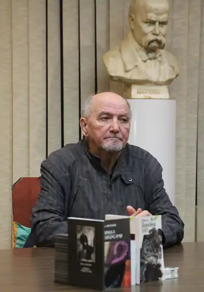

Народився 12 жовтня 1941 р. у с. Мельниківка Черкаської області.
У 1968 р. закінчив Київський університет ім. Т.Шевченка, філософський факультет.
Член Спілки письменників України (1987). Лауреат премій ім. П.Тичини (1992), "Благовіст" (1993), Шевченківської премії (2005) Живе і працює у Києві. Один з фундаторів літугрупування "Київська школа поезії". Вважається одним з лідерів андеґраунду "сімдесятників". Друкуватись почав після двох десятиліть замовчування у середині 80-х років. За збірку поезій "Верховний голос" (1992) нагороджений премією ім. Тичини, за збірку "Іскри в слідах" (1994) премією "Благовіст", за збірку поезій "Слуга півонії" (2004) Шевченківською премією. Воробйов тяжіє до медитативно-образних методів нарації у віршуванні, близьких до японської школи "хайку" та китайської поетики епохи Тан. Поетика Воробйова насичена кольоровими екстраполяціями, символічними парадоксами, характерними для ранніх (art nouveau) періодів модерністського дискурсу. Метод та образні ряди Воробйова стали своєрідним фундаментом для деяких феноменів сучасного НМ-дискурсу в українській літературі, зокрема для поезії В. Герасим’юка, Я. Довгана, "Нової деґенерації". Одночасно концептуальна складова поетики Воробйова зупинена на межі неігрової потреби модернізму. Автор збірок: "Пригадай на дорогу мені" (1985), "Місяць шипшини" (1986), "Ожина обрію" (1988), "Прогулянка одинцем" (1990), "Верховний голос" (1991), "Іскри в слідах" (1993), "Човен" (1999), "Срібна рука" (2000) і дитячих книжок, "Слуга півонії" (2004). Твори перекладені на англійську, португальску, німецьку, сербсько-хорватську, румунську, польську, російську, грузинську мови. Поет. Живе і працює у Києві. Один з фундаторів літугрупування "Київська школа поезії". Вважається одним з лідерів андеґраунду "сімдесятників". Друкуватись почав після двох десятиліть замовчування у середині 80-х років. За збірку поезій "Верховний голос" (1992) нагороджений премією ім. Тичини, за збірку "Іскри в слідах" (1994) премією "Благовіст". Воробйов тяжіє до медитативно-образних методів нарації у віршуванні, близьких до японської школи "гайку" та китайської поетики епохи Тан. Поетика Воробйова насичена кольоровими екстраполяціями, символічними парадоксами, характерними для ранніх (art nouveau) періодів модерністського дискурсу. Метод та образні ряди Воробйова стали своєрідним фундаментом для деяких феноменів сучасного НМ-дискурсу в українській літературі, зокрема для поезії В. Герасим’юка, Я. Довгана, "Нової деґенерації". Одночасно концептуальна складова поетики Воробйова зупинена на межі неігрової потреби модернізму.